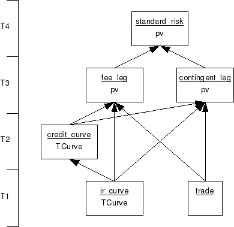

| Download version | 1.0 |
| Download licence | BSD |
| Trad4 version | 2.0.4 |
| Author | schevans |
| Date | 17-03-2009 |
This application is based on the ISDA CDS Standard Model (version 1.7), developed and supported in collaboration with Markit Group Ltd. The original code is available here: http://www.cdsmodel.com/
This application - jpm_cds - is a port of the above application to the trad4 architecture.
This release (v.0) represents Phase1 of this project and simply hooks a trad4 wrapper up to the ISDA function calls. Phase2 will represent a full port, where all the underlying structures and functions become fully intergrated into jpm_cds.
The model is very similar to that of bond_risk, discussed at length in the trad4 manual. The idea is to get the computationally expensive parts of pricing a trade (in this case the ir and credit curve bootstrapping) to persist so that any objects that depend on this result can re-use them.

The annotated t4 files are available here